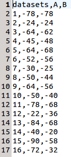

The data file must be in csv ("comma separated values") format. That is, a plain text file in which each row represents an element of the data set, with its attributes separated by commas. Lets take the following image as an example:

It consists of the following elements:
- First row: datasets (any word would be valid before the first comma), algorithmName1, algorithmName2, ... , algorithmNameN
- Next rows: datasetName, algorithmResult1, algorithmResult2, ... , algorithmResultN
Examples:
Data sample with 2 algorithmsData sample with 4 algorithms
It is assumed in STAC that the lower the result of an algorithm on a problem, the better the performance of such algorithm. Let us consider the following example:
It consists of the following elements:
- Here, on problem 4 (5th row) algorithm A performs better than algorithm B (45 vs 48).
- On the contrary, on problem 3 (4th row) algorithm A performs worse than algorithm B (64 vs 62).
If your datafile does not meet this criterion (i.e., in your case the higher the value, the better the algorithm performance), there are a number of simple transformations you can apply to your data. For example, just change the sign of each number in the file. In the previous example, the data file should look like:
Hypothesis testing: Statistical problem which, in regard to a data sample, assumes that an initial hypothesis \({H_0}\) is true and check if the evidence against it is sufficiently strong in favor of an alternative hypothesis \({H_1}\). Learn more.
Statistic: Quantitative measure calculated with the tests. This quantitative measure provides the feasibility of the null hypothesis. Each test has its characteristic way of obtaining this value and the statistics follow a particular probability distribution (such as normal distribution, etc.).
Significance level (\(\alpha\)): Probability of rejecting a null hypothesis when it is true. Also known as confidence level or Type I error (false positive). Learn more.
Power (\(1-\beta\)): Probability of rejecting a null hypothesis when it is false. As the power increases, the chances of a Type II error (false negative or \(\beta\)) decrease. Learn more.
p-value: Probability of obtaining a value of the statistic at least as extreme as the obtained in the test. Learn more.
Rejection of \(H_0\): When the p-value is less than the significance level \({\alpha}\), the test is considered statistically significant and the null hypothesis is, therefore, rejected. Learn more.
Parametric test: Statistical test that makes assumptions about the parameters of the population distribution of the data. These assumptions can be summarize as:
- Normality: the distribution of the data follows a gaussian distribution. Learn more.
- Homoscedasticity: the distributions of different groups are equal. Learn more.
- Independence: the values of a group are independent between them. Learn more.
Non-parametric test: Statistical test that does not make assumptions about the parameters of the population distribution of the data. Less powerful than its parametric counterpart.
A two-step procedure is used to compare more than two groups of samples (algorithms):
- Reject the null hypothesis that all the groups behave similarly, usually calculating a ranking of the groups. It is only necessary that two groups are different to reject the null hypothesis.
- A post-hoc test that compare the groups in pairs to test if the difference between each pair is statistically significant. This procedure controls the familywise error rate, the increase in the Type I error due to the use of multiple related tests. Learn more.
Two types of post-hoc tests can be distinguished:
- Control method: The first algorithm returned from the ranking test is compared with the others. There are \({K-1}\) comparisons.
- Multiple comparison (multitest): Compares all the algorithms between themselves. The number of comparisons would be \(m = {K*(K-1) \over 2}\).
Shapiro-Wilk: Tests the null hypothesis that the samples come from a normally distributed population. This is considered as one of the most powerful tests, especially for samples of less than 30 elements.
D'Agostino-Pearson: Tests the null hypothesis that the samples come from normally distributed population. The test combines the asymmetry coefficient (to what extent the normal is symmetric or of coefficient 0) and the coefficient of Kurtosis (degree of amplitude, usually of coefficient 0) in order to obtain an statistic and p-value. It's less powerful than Shapiro-Wilk.
Kolmogorov-Smirnov: Performs a test of goodness of fit, to determine if the data follows a normal distribution. It assumes, as H0, that the distribution obtained from the observed data is identical to the normal distribution. This is the least powerful offering the worst results off the three.
Levene: Tests the null hypothesis that all the input populations come from populations with equal variances. If the p-value obtained from Levene's test is less than the significance level, the hypothesis is rejected. Parametric tests such as Anova or T-test, assume homoscedasticity in the populations.
t-test: Tests the null hypothesis that 2 related or repeated samples have identical mean values. The test checks if the mean score differs significantly between the samples. Learn more.
It can be applied to:
- Paired data: the data values of each group are related.
- Unpaired data: the data values of each group are independent.
ANOVA: Tests the null hypothesis that the means of the results of two or more groups are the same. For this, the test analyzes the variation between samples as well as their inner variation with the variance. The statistic of the ANOVA test, is estimated by the f-distribution.
Bonferroni: Once evidence of the existence of significant differences between the means of the algorithms is achieved, thanks to the variance analysis of ANOVA, it is possible to proceed with the POST-HOC test of Bonferroni in order to determine the discrepancies between all the samples, comparing the means of all the algorithms. Each p-value associated with the hypothesis \({H_i}\) is compared taking an \({\alpha}\) adjusted to all the comparisons: \(p_i < {\alpha \over m}\), where \({K}\) is the number of algorithms and m is the number of comparisons: \(m = {K*(K-1) \over 2}\)
Wilcoxon: Tests the null hypothesis that two related paired samples come from the same distribution. It assumes that the differences between samples are symmetrical with respect to the median. Learn more.
Binomial Sign: Tests the null hypothesis that two related paired samples come from the same distribution. It does not assume symmetry but is less powerfull than Wilcoxon. Learn more.
Mann-Whitney-U: Tests the null hypothesis that two non-paired samples come from the same distribution. Learn more.
Friedman: This test makes comparisons and assigns rankings to each data set. The statistic follows a chis-quared distribution with \({K-1}\) degrees of freedom, being \({K}\) the number of related variables (or number of algorithms).
Friedman's aligned ranks: It makes comparisons an assigns rankings considering all the data sets. It is usually employed when the number of algorithms in the comparison is low.
Quade: Similar to ImanDavenport, only that it takes into account that some problems are more difficult or that the results obtained from different algorithms present higher discrepancies (weighting).
Bonferroni-Dunn: This test rejects the null hypothesis if: \(p-value < {\alpha \over (K-1)}\), where \({K}\) is the number of algorithms in the sample. It is a very conservative test and many differences can not be detected (the worst power).
Holm: It compares each \({p_i}\) (starting from the most significant or the lowest) with: \({\alpha \over (K-i)}\), where \({i \in [1,K-1]}\). If the hypothesis is rejected the test continues the comparisons. When an hypothesis is accepted, all the other hypothesis are accepted as well. It is better (more power) than Bonferroni-Dunn test, because it controls the FWER (familywise error rate), which is the probability of committing one or more type I errors among all hypothesis.
Hochberg: It compares in the opposite direction to Holm. As soon as an acceptable hypothesis is found, all the other hypothesis are accepted. It is better (more power) than Holm test, but the differences between them are small in practice.
Finner: Finner's test is similar to Holm's but each p-value associated with the hypothesis \({H_i}\) is compared with: \(p_i \leq {1-(1-\alpha)^{\frac{(K-1)}{i}}}\), where \({i \in [1,K-1]}\). It is more powerful than Bonferroni-Dunn, Holm, Hochberg and Li (only in some cases).
Li: This test rejects all the hypothesis if the least significant p-value is less than \({\alpha}\) (significance level). Else, the test accepts the hypothesis and rejects any remaining hypothesis whose p-value is less than: \(value = \frac{(1-p-value_{K-1})}{(1-\alpha)\alpha}\). The author states that the power of this test is Highly influenced by the p-value (greater power when the p-value is less than 0.5).
Multitests: Just like the others but with \({m}\) comparisons instead of \({K-1}\), where \(m = {K*(K-1) \over 2}\).
Shaffer: This test is like Holm's but each p-value associated with the hypothesis \({H_i}\) is compared as \(p_i \leq {\alpha \over t_i}\), where \({t_i}\) is the maximum number of possible hypothesis assuming that the previous \({(j-1)}\) hypothesis have been rejected.
STAC
Web plataform for the statistical comparison of algorithms
Version 1.0
Final Degree Project developed by by: Adrián Canosa Mouzo. Universidad de Santiago de Compostela - Escuela Técnica Superior de Ingeniería.
STAC logo was designed by Ángel Piñeiro Souto